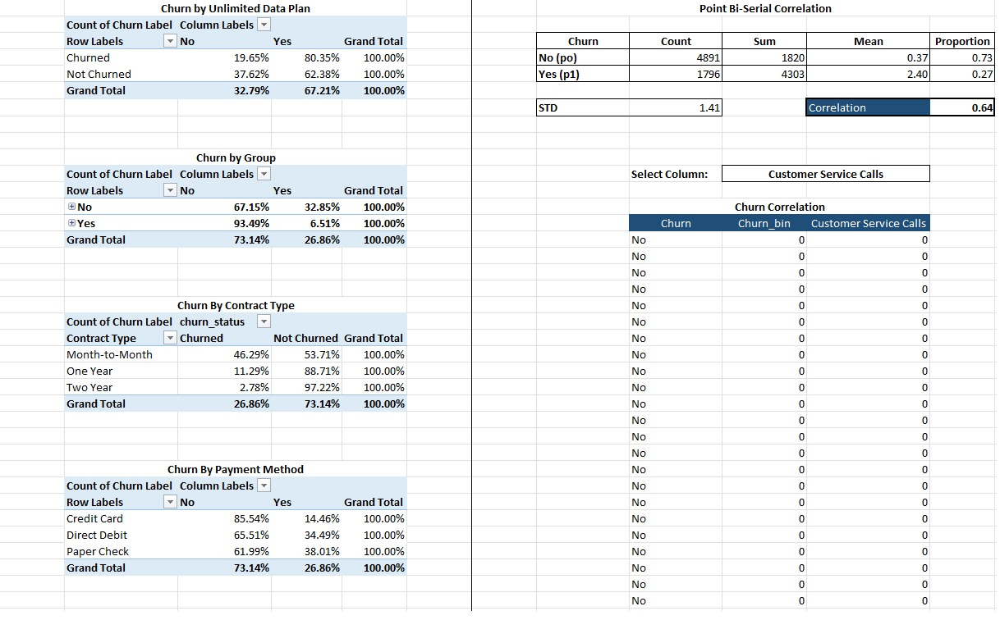
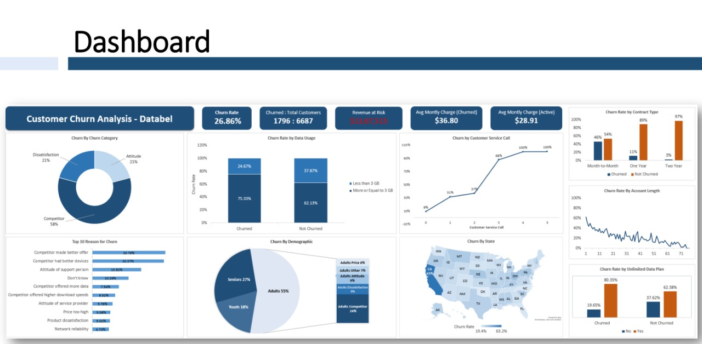
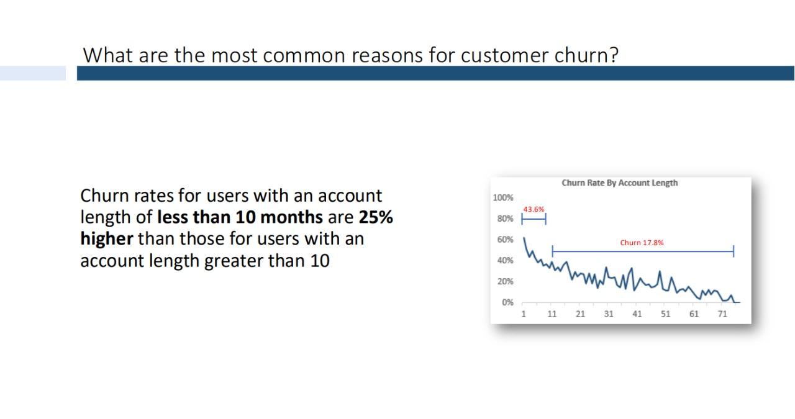
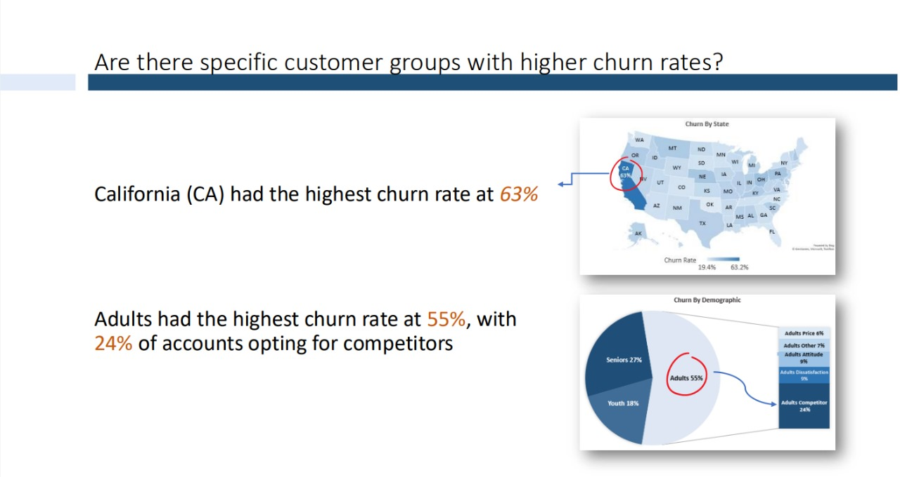

 Github
Github.png) Linkedin
LinkedinAbout the Project
Analyzed churn for Databel, a telecommunication company, to identify high-churn segments, key drivers, and actionable recommendations
Steps Taken:
- Cleaned data and handled null values.
- Analyzed churn with pivot tables and charts.
- Calculated correlations between churn and key variables.
- Built interactive
visualizations to,explore churn patterns.
Skills: Excel,Power Query, Pivot Table
Approach And Insights
- California (CA) has the highest churn rate at 63%.
- No gender disparity in churn rates.
Churn Rates:
- Customer Service Calls: Negative correlation (0.64) with churn; churn increases significantly (>2 calls, from 36% to 87%).
- Account Length: Weak negative correlation (-0.35), indicating longer tenure slightly reduces churn.
- Data Usage: Lower data usage (<3GB) leads to 13% higher churn.
- Average Monthly Charges: Churned customers pay $8 more on average.
- Demographics: No gender-based churn differences. Contract types and payment methods show strong churn relationships.
Drivers of Churn:
- Churn types identified: conditional loyal subscribers, conditional churners, lifestyle migrators, and unsatisfied customers.
Segmentation:
Conclusion
Reccomandation:
This analysis provides critical insights into customer churn patterns for Databel. By addressing high-churn customer segments and improving customer service quality, Databel can reduce churn rates and enhance customer satisfaction.